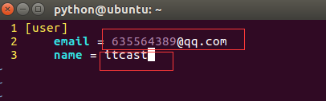
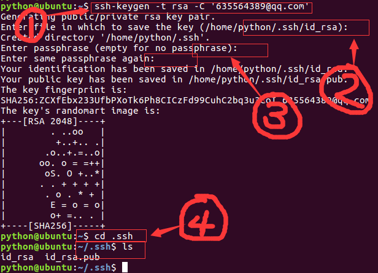

添加ssh账户
- 这一步是组员在ubuntu中生成ssh密钥，然后交给项目经理添加到github中
- 在ubuntu的命令行中，修改某台机器的git配置

- 修改为注册github时的邮箱，填写用户名，要求组员的用户名不能重复

生成git密钥
- 删除~/.ssh目录，这里存储了旧的密钥
rm -r .ssh
- 运行如下命令生成密钥
- 在“图标2”处可以填写保存密钥的目录
- 在“图标3”处可以填写密码，如果填写，一般为项目的名称，后续操作时会要求填写此密码
- 公钥名称为id_rsa.pub
- 私钥名称为id_rsa
ssh-keygen -t rsa -C "Github账号，可以是用户名，也可以是邮箱地址"

- 查看公钥内容，复制此内容
cat id_rsa.pub

- 将复制的公钥发给项目经理，等项目经理在github上添加后，会将项目地址下发，然后就可以参与到项目开发中进行后续操作